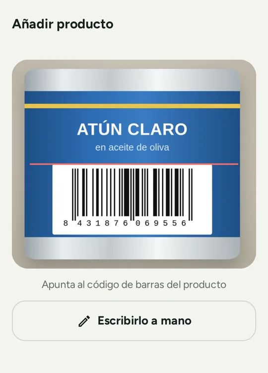
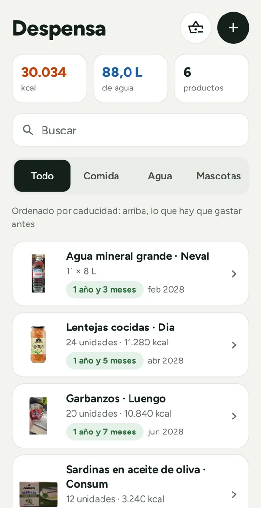
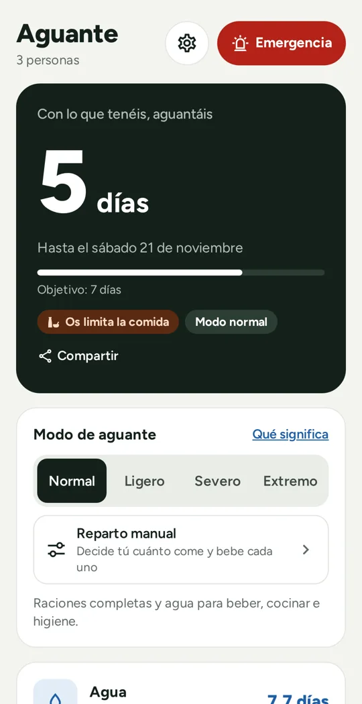
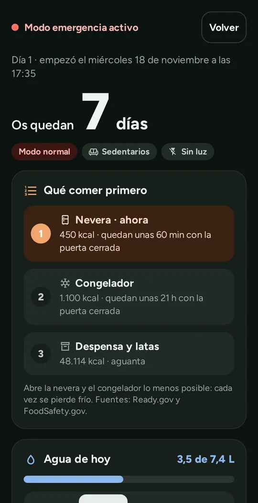
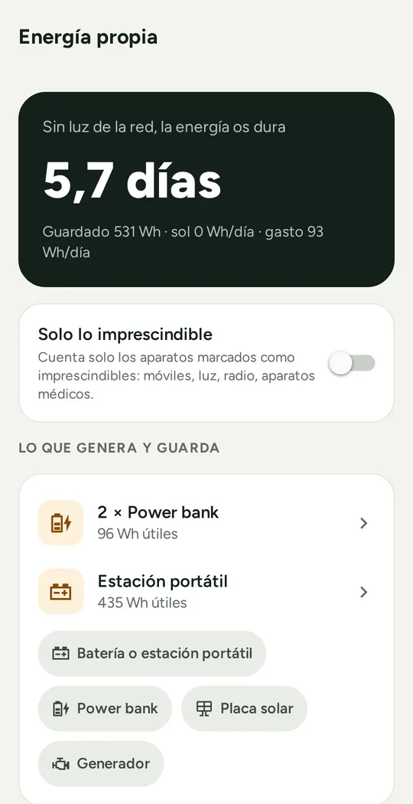
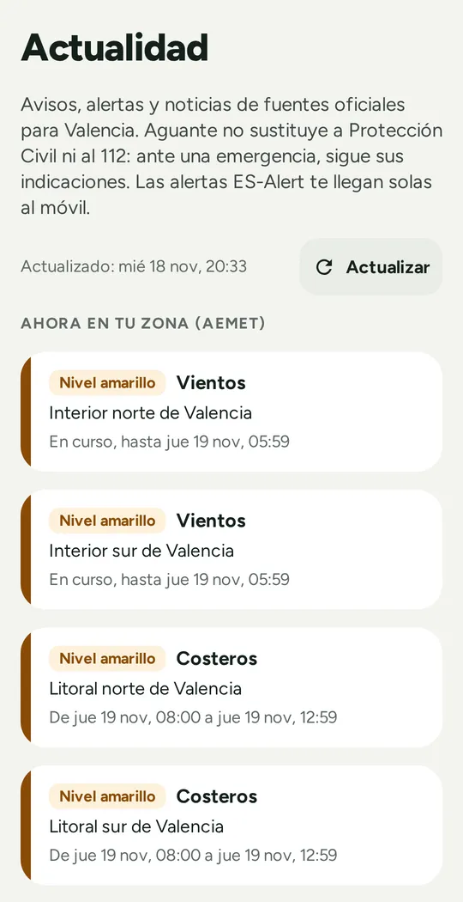

¿Cuántos días aguanta tu casa?
Apunta la cámara al código de barras de tus latas, conservas y garrafas de agua. Aguante te dice cuántos días aguantaríais si se va la luz o no se puede salir a comprar, y qué os falta para llegar a la semana.
Descargar para Android Probar la calculadora
Gratis, sin anuncios y sin nada bloqueado. Funciona sin internet.
Cómo funciona
-

1. Escanea tus latas
Apunta al código de barras. El nombre, el peso, las calorías y la foto salen solos de Open Food Facts. Sin conexión, hay valores típicos de legumbre, atún, arroz o pasta.
-

2. Tu despensa, lata a lata
Ordenada por caducidad, con lo que hay que gastar arriba. Te avisa dos meses antes de que caduque algo.
-

3. Sabes cuántos días aguantáis
Según quién vive en casa: edad, peso, embarazo… Y qué os limita antes, que casi siempre es el agua.
Y cuando hace falta
-

Si se va la luz
El modo emergencia apunta cuándo se fue la luz, lleva la cuenta de los días y te dice qué comer primero: la nevera (unas 4 horas), el congelador (24 a 48 horas) y al final las latas.
-

Cuánto os dura la batería
Apunta tus baterías externas, estaciones portátiles, placas solares o generador, y lo que gastan tus aparatos. Aguante te dice cuántos días os da la energía que tenéis.
-

Avisos de tu zona
Los avisos de AEMET de tu provincia, los terremotos del IGN y las alertas de alimentos y medicamentos, todo de fuentes oficiales y en una sola pestaña.
Y para tenerlo todo a punto
Plan de compra
Lo que os falta para 72 horas, una semana o dos, repartido en meses según lo que puedas gastar. Lo que compras pasa a la despensa y la app te lo recuerda el día que elijas.
Kit de emergencia
Listas para casa, mochila, coche y botiquín, con la caducidad de tus medicinas y pilas. Ver las listas.
Que no caduque nada
Cada lunes te dice qué gastar esa semana de lo que caduca en dos meses, para comerlo en el día a día y reponerlo.
Para toda la casa
Con una cuenta (opcional), quienes vivís juntos compartís la despensa, el kit y la emergencia desde varios móviles.
Plan familiar
Dónde os encontráis, a quién llamáis y quién recoge a los niños, a mano aunque no haya conexión.
Guías sin conexión
Las primeras horas de un apagón y cómo potabilizar agua, dentro de la app y con fuentes oficiales.
Preguntas
¿Necesita internet?
No. Todo se guarda en el móvil y el cálculo, la despensa, el kit, el plan familiar, las guías y el modo emergencia funcionan sin conexión. Necesitan red el escáner (para buscar el producto en Open Food Facts), los avisos de Actualidad y compartir la casa.
¿Es una app oficial?
No. Aguante no es de ninguna administración y no sustituye a Protección Civil ni al 112: en una emergencia, sigue sus indicaciones. Los avisos que enseña salen de fuentes oficiales (AEMET, IGN, AESAN, AEMPS…), y las alertas ES-Alert te llegan solas al móvil, sin ninguna app.
¿Es gratis de verdad?
Sí: sin anuncios y sin nada bloqueado. Se mantiene con donaciones voluntarias.
¿Qué pasa con mis datos?
Sin cuenta, nada sale de tu móvil. La cuenta solo hace falta para compartir la casa. Lo cuenta todo la política de privacidad.
¿De dónde salen las cifras?
Las calorías, de las ecuaciones de la FAO; el agua para beber, de la EFSA y de la regla de 1 mL por kcal (NRC), con la higiene aparte, y como referencia el galón de Ready.gov (3,8 L por persona y día); lo que aguantan la nevera y el congelador sin luz, de Ready.gov y FoodSafety.gov. La app enseña cada fuente, y lo que es criterio propio va marcado.
¿Y si un producto no está en Open Food Facts?
Escribes el nombre y eliges un valor típico, o copias el peso y las calorías de la etiqueta.
Guías
Cuánta agua guardar
Por persona y día, y de dónde sale la cifra.
Si se va la luz
Qué comer primero: nevera, congelador y latas.
Kit de emergencia
Qué tener en casa, en la mochila y en el coche.
Rotar la despensa
Una reserva que se come y se repone.
Descargar
Android. Aguante todavía no está en Google Play.
Mientras, puedes calcular aquí cuántos días aguanta tu casa.